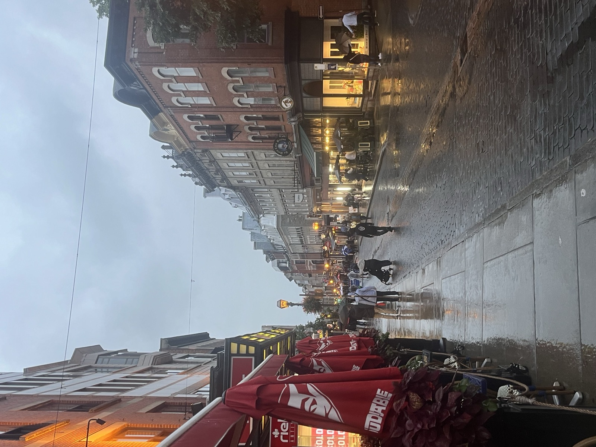
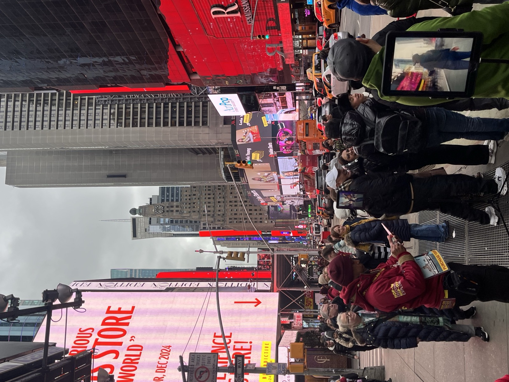
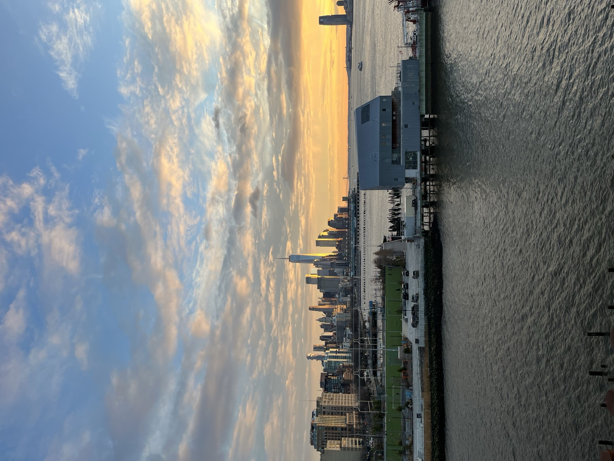
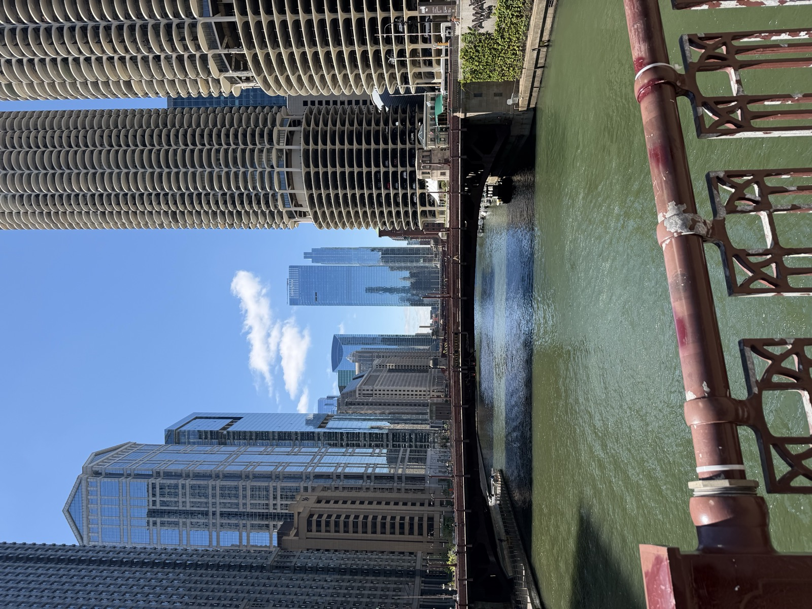
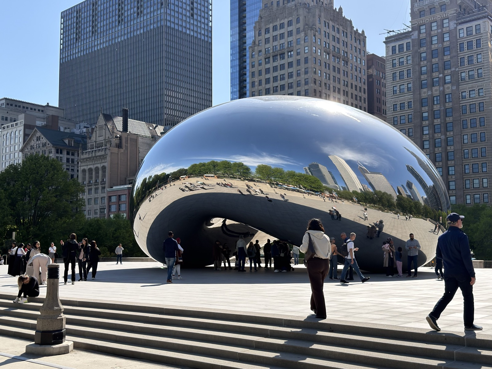
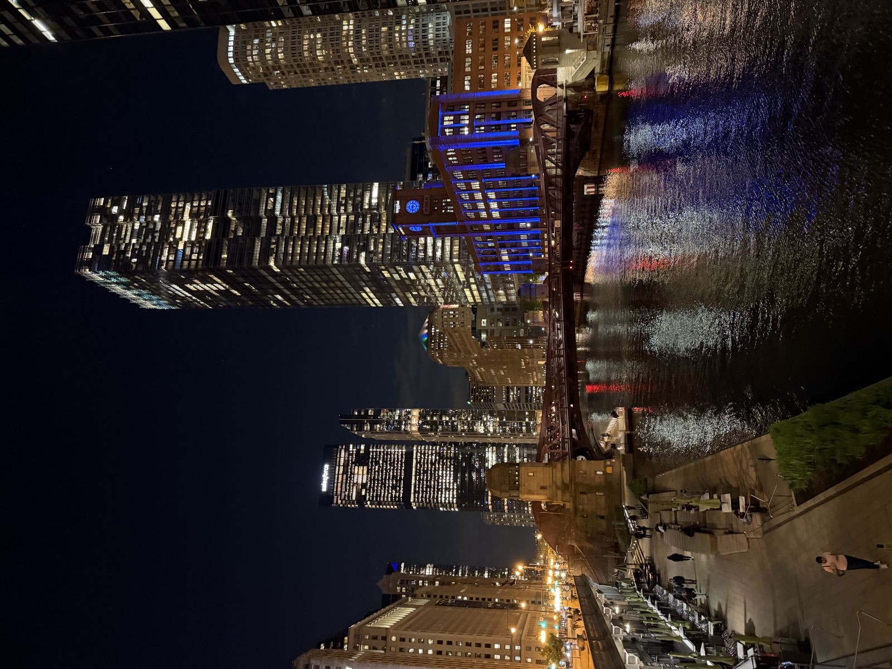

Travel Gallery
Places, views, and small moments from the road.
A quiet photo page for travel memories. I keep it separate from the main portfolio so the homepage stays focused on projects, skills, and work.
Back to Portfolio




